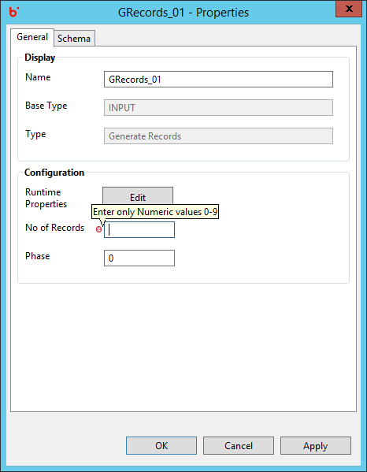
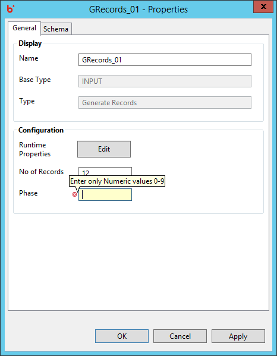

Hydrograph Help
Generate Records Validations
Hydrograph Release Version 1.0
Validations for the Generate Records component are in place for each property present on the Properties window.
General Properties:
- No of Records -No of Records has a default value of 0. This text box accepts only numeric values. Alphabets and special symbols are not allowed. However, blank text box results in error validation and is not allowed.

- Phase -Phase has a default value of 0. However, blank text box results in error validation and is not allowed.
